孖仔帮与您分享双胞胎育儿经
点击蓝字
关注我们
文|圆圈妈，一个文思如尿崩的双胎妈妈
01
继孖仔帮上周关于双胞胎婴儿车的推文
《双十一囤货：我为什么不买并排式的双胞胎婴儿车，这篇文章有答案》
此文一出就收到许多宝爸宝妈的留言，咨询双胞胎婴儿车的品牌，果然大家都想拼了老命要给两宝宝人生第一辆最好的坐骑。
我觉得我恐怕要让大家失望了，我是个对品牌没有概念的人，圆圈大姨在欧洲给我买的COACH单肩包被我研究半天后，结论是：还不如我在淘宝上买的斜挎包，19.9元还包邮！
俗话说“外行看热闹，内行看门道”。
也许是我职业病的原因，对品牌这东西看透了，我就是对品牌货不感冒！
即便如此，我还是盛情难却，（….非常吃力…）搜集了些双胞胎婴儿车的品牌分享给大家。
这些品牌是参考了国内外，港澳台的育儿论坛中众多双胎爸爸和妈妈分享总结而来。
如截图所示：
温馨提示：
这是个没有品牌意识的双胎妈妈分享的关于双胞胎婴儿车品牌的拙见之谈。
有没有用呢？请见仁见智，多多包涵哈！
本来还想针对这些品牌婴儿车的细节再做简要说明，可是我写不出来了。
我实际育儿中，几乎不会考虑这么多，我也没有时间去考虑。
再者，这些品牌有一个共同点是，贵！太TM贵了！
应该看到价格就没有下文，不会再有兴趣看细节的了。
大家都说养一对双胞胎很烧钱。
作为一个在深圳一线城市小康家庭的双胎妈妈，觉得还好吧！
只要不选那些少则上千多则上万的婴儿车就行。
众所周知，双胞胎婴儿车真的很烧钱。
如果这钱用到点子上，烧钱也没关系，值！
问题是，花几千上万块去买一辆可能不适合，随时会换掉，使用率不高，用不到几个月就会被压箱底的双胞胎婴儿车。
请问值得吗？
当然，土豪，请忽略我的罗里吧嗦，直接跳过，买单去吧！
我给圆圈买的第一辆婴儿车，156块钱一辆，国产某杂牌，奇丑无比，基本功能都有，用了1年几乎就退役了。
不是质量不行，而是圆圈的成长发育情况逼着我不得不换车了。
1岁的他们更喜欢轻便伞车推着，去到更远的地方满足他们探索这个世界的好奇心。
我一点都不心疼，156块钱的婴儿车为我这个双胞胎家庭服务了365天，差不多够本了！
要是买上万块的车，居然用不到1年，我一定逼着圆圈继续使用，才觉得心里平衡点。
02
关于双胞胎婴儿车的品牌吐槽到此结束。
今天孖仔帮这个文章想要谈谈双胞胎圆圈妈妈是如何选双胞胎婴儿车的！以下是我考虑的几点，仅供参考。
双胞胎宝宝谁来带？
跟大家一样，很俗，双胞胎宝宝当然要买双胞胎专用婴儿车啦！
我被baby jogger的双胞胎婴儿车惊艳到了，心动到无法呼吸，我甚至开始幻想推着圆圈兄弟出门时那雄赳赳的样子…
可是现实很残酷，带圆圈兄弟的人是他们的爷爷奶奶，不是我。
他们都是爱孙狂魔，都想推着宝贝孙子到处炫，一人推一车不用排队，不用抢，正中下怀。
因此，当我说要买并排一体式婴儿车时，被他们严词拒绝了！
圆圈爸也帮腔，认为不一定每次出门都是带着两个宝宝一起，推着一个双人座的大战车上街真的很“招摇撞骗”。
最后，考虑到老人家身体不好，年纪大，每天上下楼推着那么笨重的婴儿车，实在不现实。
…我妥协了！
靠两老人家带，他们怎么方便怎么来，我只能由着他们了。
我心仪的拉风的酷酷的婴儿车，只能“撒呦哪啦”！
因此，买双胞胎婴儿车，还得想想双胞胎宝宝谁来带，或者谁带的多。
要参考下主要照料人的意见，一切全是为了满足照料人的喜好，以便更顺利地照顾好双胞胎宝宝。
我对婴儿车的期望值是什么？
我是一胎双胞胎，没有经验，我甚至不知道婴儿车可以用来做什么，更不用提什么期望值了。
也许就是我的一无所知才让我并没有在选购婴儿车上纠结太久。
只能说知道越少有时候反而是件好事情。
婴儿车嘛，无非就是推着在小区里面溜达下，出去附近超市闲逛几圈，或者推着两宝宝去社康打预防针…几乎去不了太远！
我很明确，在圆圈1岁前，我是不可能跟圆圈爸带着圆圈独自出远门的。
虽然很想，但不得不输给现实。
套用一句网红经典语句：有些事情，并不是我不在意，而是我在意了又能怎样嘛！
我看过一个双胞胎家庭，用的是高景观前后座款，从后备箱拿下来安装，耗了10分钟。
爸爸和爷爷在装车满头大汗，妈妈和奶奶在冲奶粉怨声载道，两宝宝在等奶喝哇哇大哭…
好在他们人多，能搞定。
这要是两口子出门，不得疯了！
当时好想问，你们究竟要婴儿车来干嘛的？
因此，扪心自问下，需要婴儿车来为你做什么，清楚这点之后，你就会马上明朗起来，侧重性地选择。
每个家庭的养娃方式不一样，对婴儿车的期望值也大同小异，才造就今天那么多纠结不已的“晕晕晕”，“买买买”。
品牌or杂牌？该怎么选？
我自从逛了一天淘宝差点把电脑砸了之后，我就把圆圈爸的银行卡全部查了遍。
OK，明白了！
预算不够，说啥都是瞎扯淡！
谁不想买品牌货，又酷又拉风，可是人民币不答应啊！
因此，我首先把品牌踢掉了，瞄准杂牌，买个质量还算OK 的凑合着用。
考虑到婴儿车是消耗品，不可能一步到位尽善尽美，随着两宝宝的增长，后续肯定会换车的。
别指望着买个贵的婴儿车，可以用到两宝宝上小学，真的是你想太多了！
后面还有口袋车，玩具车，童车，滑板车,脚踏车，….而婴儿车，只是开始！
（此处应该响起一阵哀嚎声….）
事实证明，我做了个非常正确的决定，买过的3款婴儿车都恰到好处，没有过度浪费，圆圈兄弟也没有因为婴儿车而得不到该有的乐子。
当然，这个见仁见智，每个人的价值消费观不一样，
我会花9万块去竞标一个粤B牌,因为值！
但我不会花1千块买一辆价值不明朗，用处不确定的双胞胎婴儿车。
单人款婴儿车or双胞胎婴儿车?
上一篇有提到这两者的优缺点，这里就不再啰嗦了。
这里还需要补充一点，我觉得我在上一篇极力说到可拆分并排式婴儿车的优点，有点误导大家。
通过这几天的研究观察和深入实际的实践分析，发现可拆分并排式婴儿车的一个鸡肋点！
这也是我经历过实际育儿以及与双胞胎喂养群里的辣妈讨论后，觉悟到的一点：
买可拆分婴儿车，把婴儿车组合起来的机会比较少。
我买的是单人座婴儿车，在实际育儿中，我想要把婴儿车组合起来的想法并不多，通常都是两个大人分开推着婴儿车并排走。
除非人手不足，只能一人看着两个宝宝的情况下才这样做，因为没有三头六臂，分身无术，也只有那会儿才会有一种恨不得想要把婴儿车组合起来的冲动。
但...一般很少有机会。
因为在两宝宝头三个月，我们全家人都是晕的！根本没有心思想到带着两宝宝出门去，就算是迫不得已出去，也要2对1才行。
而且，稍微研究了下，连接器接上后，整个车很宽，有“路霸”的嫌疑。
推行的人双手摆放幅度要很宽才行，推久了会比较吃力。
身材娇小迷你型的宝妈推着走上1公里估计得歇菜了，比如以下这款：
还有，所有双胞胎婴儿车无法避免的痛点就是：贵！重！大！
因此，看似很方便，实则用处不是很大，不是长久之计。
如果非要买可拆分并排式婴儿车，这里有一个省钱小绝招：
买两个同款，然后另外购置通用型的双胞胎婴儿车连接器，每次出门带上连接器，随意拆分，轻松组合即可。
当然，双胞胎婴儿车的连接器也不便宜。
（….哭…..）
婴儿车的细节要注意什么？
众所周知，养育一对双胞胎很辛苦，都想竭尽所能去降低这个辛苦指数，而选对一辆双胞婴儿车，真的会如虎添翼。
至于是不是对的婴儿车，看细节！
确定好预算，品牌，款式后，就要了解下婴儿车的细节。
这些细节可大可小，甚至能决定一辆婴儿车的使用效率，若细节不到位，婴儿车将形同摆设！
因为该考虑的细节还是蛮多的，我专门出一期推文分析婴儿车的细节，请看下回分解！
03
最后，请一定要做好心理准备，两宝宝成长到每个阶段对推车的需求都会不一样，婴儿车也会随着更新换代。
因此，一个过来人的经验总结，双胞胎婴儿车，只选对的，不选贵的！
下一期推文将会讨论婴儿车的细节。
你在婴儿车哪个细节方面纠结过，不知道实际是否有用？
如果你正有此困扰，来，留言私吼出来，我给你分析下哈！
重要通知：
孖仔帮有双胞胎爸爸专属群啦！
在此你们可以互相交流下初为人父的喜悦和已为人父的辛酸，还有你们男人间的家长里短…尽情唠嗑吧！
入群方式：＋圆圈妈的微信(sgguy-com)，我会发群聊邀请给你们。欢迎准爸爸的加入双胞胎育儿大家庭，一起分享双胞胎育儿经。
#重磅互动#
评论区聊一聊
你希望圆圈妈写什么干货？
随便提，万一下篇就写了呢？
END
本文系圆圈妈sgguy-com原创，来源于孖仔帮，专注双胞胎孕期育儿经验分享，著作权归孖仔帮所有。
212:原来双胎妈妈可以这样数胎动，好简单啊
215:双胎子宫日记系列|（下）你看不看？双胞胎妈妈直播剖腹产全过程
302:喂养干货||如何训练双胞胎宝宝睡整夜觉
306: 真人示范！双胞胎妈妈高难度喂母乳技巧
219双胞胎准爸爸的生存指南：不做猪一样的队友，活着出来喜当爹
220双胞胎准妈妈，其实你的产检方式一直搞错了…
222:看过这份最简单的双胞胎宝宝用品囤货清单，其他的都是将就
712：双十一囤货：我为什么不买并排式的双胞胎婴儿车，这篇文章有答案
304:家有双胞胎宝宝，这6个小贴士越早知道越好
305:双胞胎宝宝怎么睡？这样做既省钱又安全
303:干货||配方奶喂养的双胞胎宝宝囤货用品清单
309: 如何顺利度过双胞胎宝宝的第一年
710:双胎妈妈囤货建议||这6个育儿神器，吃土也要买
我猜你肯定喜欢看上面的文章，对不对嘛？关注孖仔帮，回复文章前面的数字编号即可阅读。
长按识别二维码关注我们
关于这个号
谢谢关注！我是圆圈妈
85后，全职双胎妈妈
家有孖仔男宝两枚，圆圈&圈圈
双胞胎育儿公众号：孖仔帮
旨意分享双胞胎育儿经验帮助双胞胎家庭
有经验可循
有组织可靠
希望我的经验对您有所启发
期待与您一起共享双胞胎育儿经
孖仔帮目前有4个微信社群
孕期群，喂养群，闲置群，双胞胎爸爸专属群，
如需入交流群，请+圆圈妈的微信号sgguy-com,或扫描下方二维码
由圆圈妈邀请入群
更多孖仔帮双胞胎原创育儿文章请猛戳 "阅读原文" 或者直接上圆圈妈的个人博客。
博客链接：https://www.sgguy.com/twinsbang

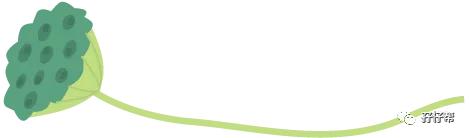
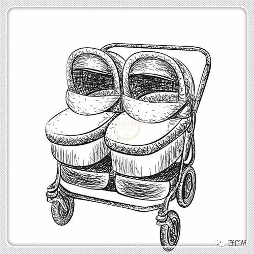
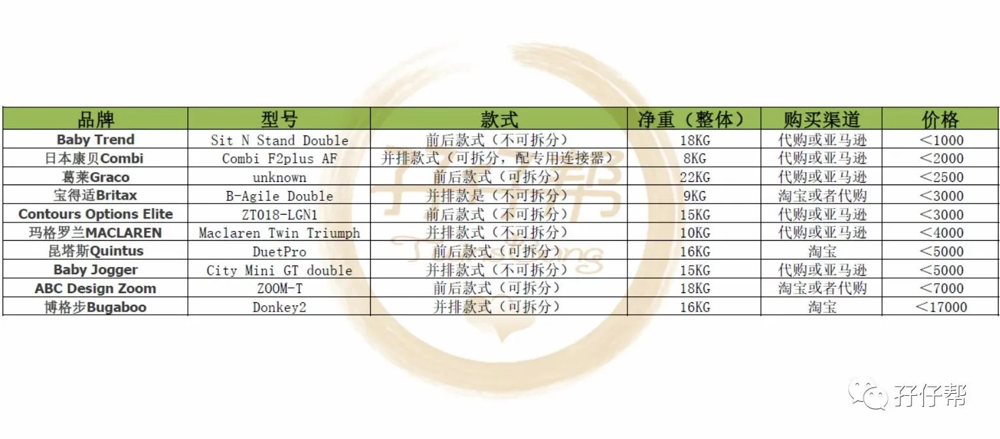
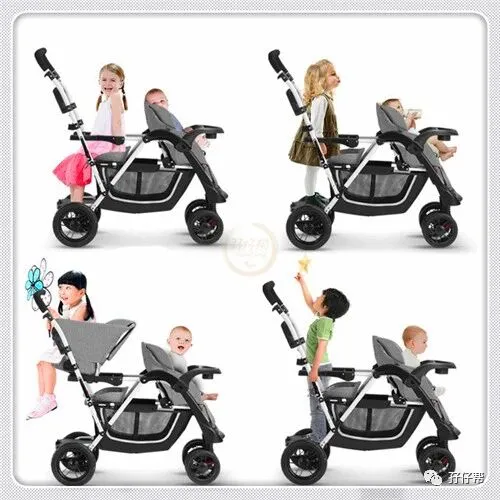
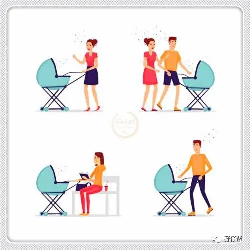
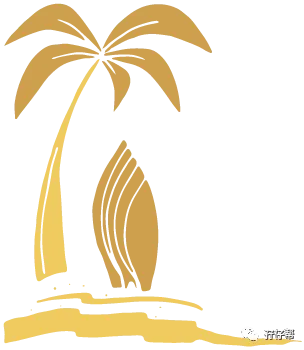
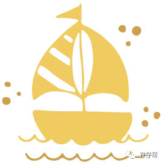
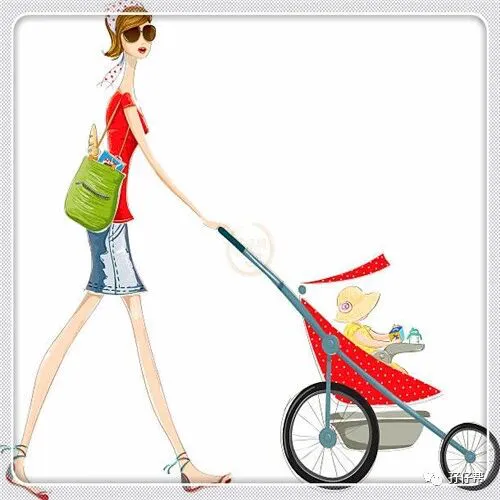
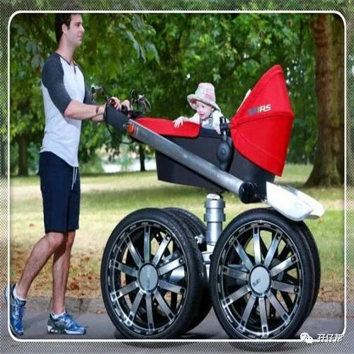
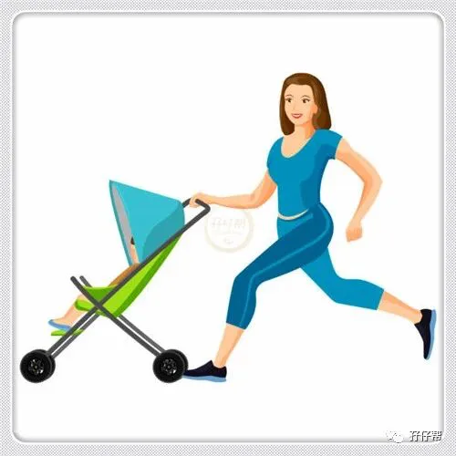
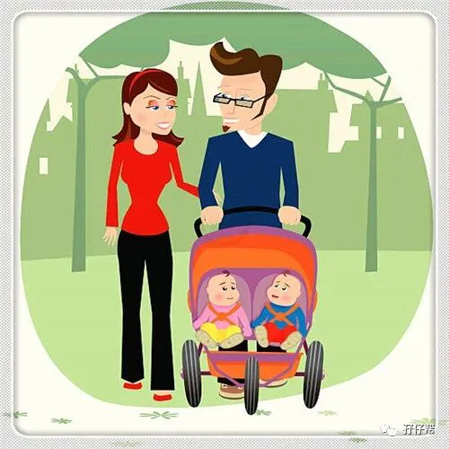
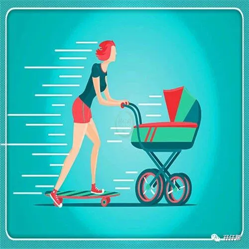
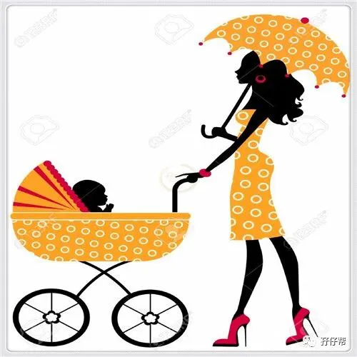
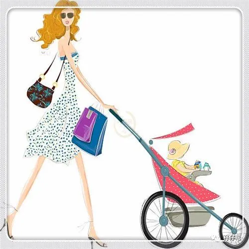
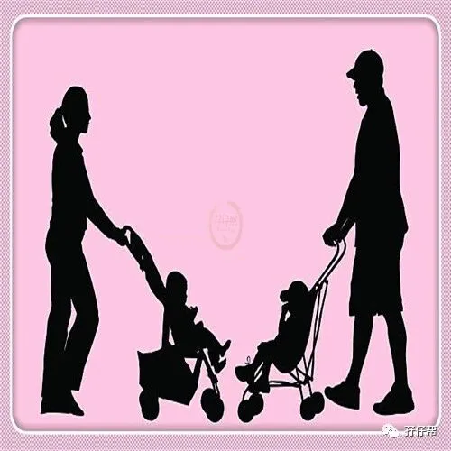
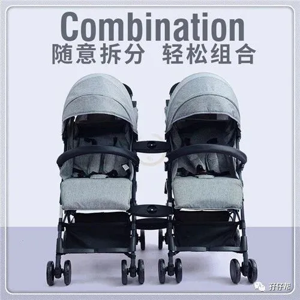
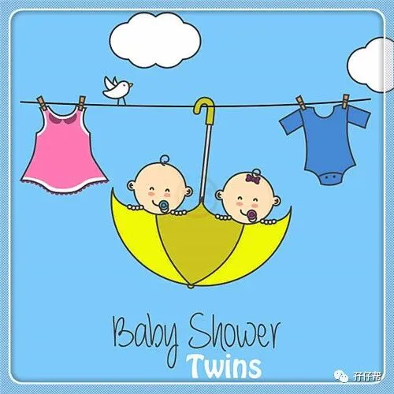